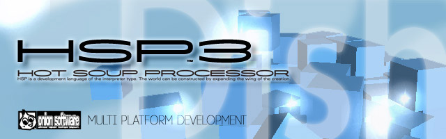
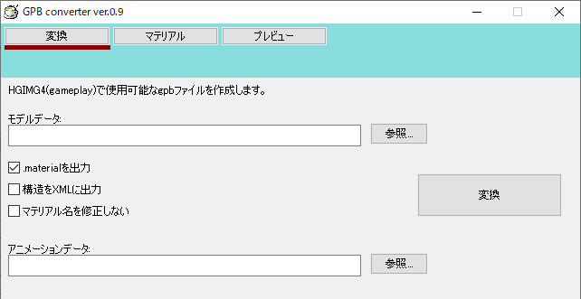

HSP : Hot Soup Processor ver3.6 / onion software 1997-2021(c)
HGIMG4 Unity連携ガイド
はじめに
HGIMG4とUnityを連携することで、より高度なモーションの適用や、3Dモデルの変換を行うことができます。
サンプルとして同梱されている「プロ生ちゃんデモ」(sample/pronama3d)により、HGIMG4を使った3Dキャラクターアニメーションのサンプルを確認することができます。
これは、プログラミング生放送のキャラクター「プロ生ちゃん」素材を使用したサンプルデモです。

プロ生ちゃんサンプルデモ一覧
マルチパスによる鏡面反射レンダリングを行うサンプルです。背景はキューブマップのスカイボックスを使用しています。

クリックかスペースキーを押すごとにプロ生ちゃんが増えていきます。大量のキャラクターアニメーションを表示するサンプルです。

ポストプロセスを加えたブラウン管テレビ風の表示など、様々なエフェクトを切り替えることができます。

物理エンジンを使って箱を落下させているサンプルです。クリックかスペースキーを押すごとに箱が発生します。
Unityとの連携
3Dゲームエンジン、ツールとして幅広く使用されているUnityをハブとすることで、各種モデルを利用しやすくなりました。
Unity上に読み込まれている3Dモデル・アニメーションデータをUnity FBX Exporterにより、HGIMG4から使用可能なFBXファイルとして出力することで、Unity上のアセット、VRMなどのモデルデータ、アニメーションを活用することができます。

また、マテリアルやモデル・アニメーションのデータを管理するためのGUIツール「HSP3d」を開発中です。
多岐に渡る3Dデータを統合的に管理・設定することにより、複雑なデータをHSP3からシンプルな形で使用することが可能になります。
Unity FBX Exporterによる出力の流れ
Unity(Unity 2017.3以降)で新しいプロジェクトを作成して、使用する素材をAssetフォルダ以下に準備(コピー)してください。
素材に含まれているFBXファイルを選択すると、Inspectorにモデルのプレビューが表示されます。
ここでは、プロ生ちゃんノーマル版を使用します。アニメーションを出力する場合は、アバターのアニメーションタイプをGenericにする必要があります。
アニメーションタイプがHumanoidになっている場合は、FBXを複製してからGenericのモデルを設定すると良いでしょう。
設定ができたら、シーン上にモデルを配置してください。FBXをHierarchyウィンドウにドロップすると、モデルがシーン内に配置されます。
Asset Storeから、FBX Exporterをダウンロードして現在のプロジェクトにインポートします。FBX Exporterは、Unityが公式に配布している無料のアセットになります。
※この記事は、Unity FBX Exporter ver.1.3.0f1を元に作成しています。FBX Exporterは、Unity 2017.3以降で動作しますが、すべてのバージョンでの動作を保証するものではありません
アセットをインポートすることで、シーン上に配置したモデルの右クリックメニューから「Export to FBX...」を選択することができるようになります。

基本的には、ここからFBX Exporterのウインドウを出して、FBXファイルを出力することになります。
FBX Exporterのウインドウオプションでは、「Export Format」をBinaryに設定しておいてください。
後は、「Export」ボタンを押すことで指定されたフォルダにFBXファイルが出力されます。
出力されたFBXファイルをHSP3(HGIMG4)から使用するためには、モデルデータを.gpbファイルに変換する必要があります。 .gpbファイルへの変換は、同梱されているGPB converter(gpbconv.exe)を使用します。ツールから、FBXファイルを選択して「変換」ボタンを押すことで、FBXファイルと同名の.gpbファイルと、.materialファイルが生成されます。

.gpbファイルは、モデルデータのみになるため、テクスチャ(画像)ファイルを使用している場合は、別途用意する必要があります。(HGIMG4では、モデルが使用するテクスチャ画像は、.png形式を推奨しています。)
GPB converterから出力された.gpbファイル、.materialファイル、テクスチャ画像(.png)ファイルをすべて実行するスクリプト以下のresフォルダにコピーして使用してください。
アニメーションを含むモデルを出力する場合は、シーン上のモデルにアニメーションコントローラーを設定して、Unity実行時にアニメーションが再生される状態にしておいてください。
ボーン構造があるモデルを出力する際に、FBX Exporterがエラーを出す場合があります。
多くの場合、これはモデルのスキンメッシュ(Skinned Mesh Renderer)設定のRootBoneが正しく設定されていないことが原因となります。
RootBoneをボーン構造の根本に近い階層に設定することで、正しく出力できるようになるはずです。
※現在のバージョンでは、HGIMG4のモデル変換時の制約により、モデルのスキンメッシュ(Skinned Mesh Renderer)のある階層に回転やスケーリングがある場合、正しくHGIMG4上で表示されないことがあります。プロ生ちゃんモデルなど、一部のモデルデータを出力する際に、メッシュ階層の回転は0にやスケールは1にしておくようにしてください。それ以外の階層における回転やスケーリングは特に制限はありません。
※プロ生ちゃんモデルを出力する際に、スパッツや靴下など一部のパーツがちらついて表示されることがあります。
これは、差し替え用のマテリアルが重なって表示されているためで、正しく表示させるためには、FBXのマテリアルインポートを以下のように設定する必要があります。
PronamaChan.fbxファイルのインスペクタで、モデルを取り込む際のマテリアル設定を行うことが可能です。

それぞれのマテリアルに対して、Materials/Unlitフォルダ下にあるマテリアルファイル(.mat)を割り当てます。
たとえば、「BODY_skin」に対しては、「skin」のマテリアルを割り当てます。
「BODY_skin.002」「BODY_skin.003」「BODY_skin.004」は、差し替えるためのマテリアルでもともと表示する必要がないため、「transparent(透明)」のマテリアルを指定しておいてください。
Unity上ではtransparentマテリアルは表示されませんが、HGIMG4上で表示した際にはtransparentマテリアルは白色として表示されてしまいます。
そのため、HGIMG4での表示マテリアル設定を行う.materialファイルを編集します。
GPB converterにより、PronamaChan.fbxファイルを変換した際に、マテリアル設定が、PronamaChan.materialとして保存されます。このファイルをテキストエディタで開いて、「material transparent_187 : colored」の項目を編集します。
material transparent_187 : colored
{
u_diffuseColor = 1, 1, 1, 1
u_inverseTransposeWorldViewMatrix = INVERSE_TRANSPOSE_WORLD_VIEW_MATRIX
u_matrixPalette = MATRIX_PALETTE
renderState
{
depthFunc = NEVER
}
technique
{
pass
{
defines = SKINNING;SKINNING_JOINT_COUNT 187
}
}
}
renderState項目の設定により、transparent_187のマテリアル描画を行わないように指定しています。 これで、正しく表示されるはずです。スパッツや靴下を使わない(表示しない)場合は、スパッツや靴下のマテリアルもtransparentに指定する必要があります。
Unity上でのアニメーション適用

アニメーションをモデルに適用する方法はいくつかありますが、手軽にアニメションデータを入手できるサイトとして、mixamoがあります。 mixamoは、様々なモデルに対してアニメーションを適用したものを無料でFBXファイルとしてダウンロードでき、自由度の高いライセンスとなっています。

Unity上のアセットでも、様々なモーションデータや、作成するためのツールなどが揃えられていますので、かなりの部分を無料で行うことが可能です。
mixamoを含めて、多くのアニメーションデータは、アニメーションタイプがHumanoidリグのものを対象としています。
FBX Exporterでアニメションを出力するためには、Genericリグにする必要があり、標準のUnity機能ではHumanoidとGenericを変換することができません。
ただし、有料アセットではこの変換をサポートするものがあり、「UMotion Pro」はその1つとして活用することができます。

今回のプロ生ちゃんサンプルデモでは、UMotion Proを使用してmixamoのアニメーションデータを変換したものが使われています。 「UMotion Pro」自体で、アニメーションデータの作成を行うこともできるので、活用の幅は広がるはずです。
3Dアバターファイルフォーマットである、「VRM」形式を、UniVRMを使用してUnityに読み込み、FBX Exporterで出力することも可能です。

Unityをハブとすることで、幅広く3Dモデルやアニメーションを活用することができます。 HSP3のスクリプトから3Dをコントロールすることで、手軽なゲーム作成、テスト的なアプリケーションなど、あなたのアイデアで応用範囲を広げてみてください。
著作権とライセンス
アーカイブに含まれるランタイム及びスクリプトファイルは、HSP本体と同様のライセンスのもと添付、複製、改編、再配布することができます。
ユーザーがツールを使って作成したデータ、及び生成されたスクリプトの権利は、それを作成したユーザーに属します。
サンプルで使用されている3Dモデル（プロ生ちゃん）のライセンスは、以下を参照してください。
暮井 慧（プロ生ちゃん） 3D model © Pronama LLC ※詳しくは、 https://kei.pronama.jp/素材を使用する際には、必ず「プロ生ちゃん」の利用ガイドラインをお読みください。
プロ生ちゃん（暮井 慧）利用ガイドライン https://kei.pronama.jp/guideline/